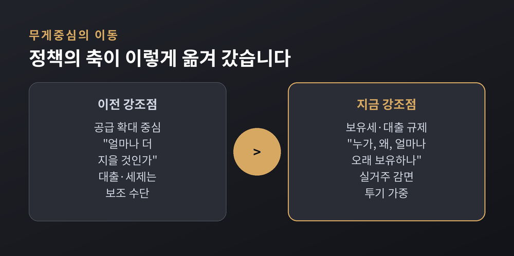
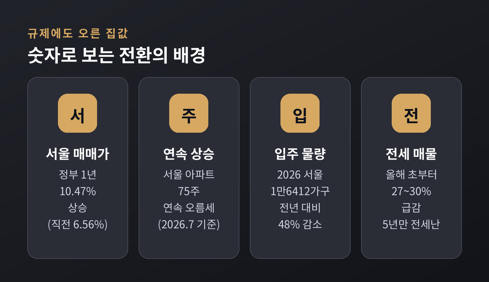
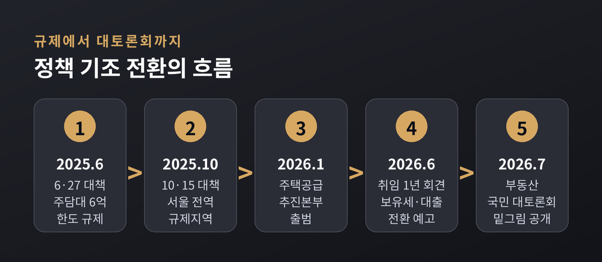
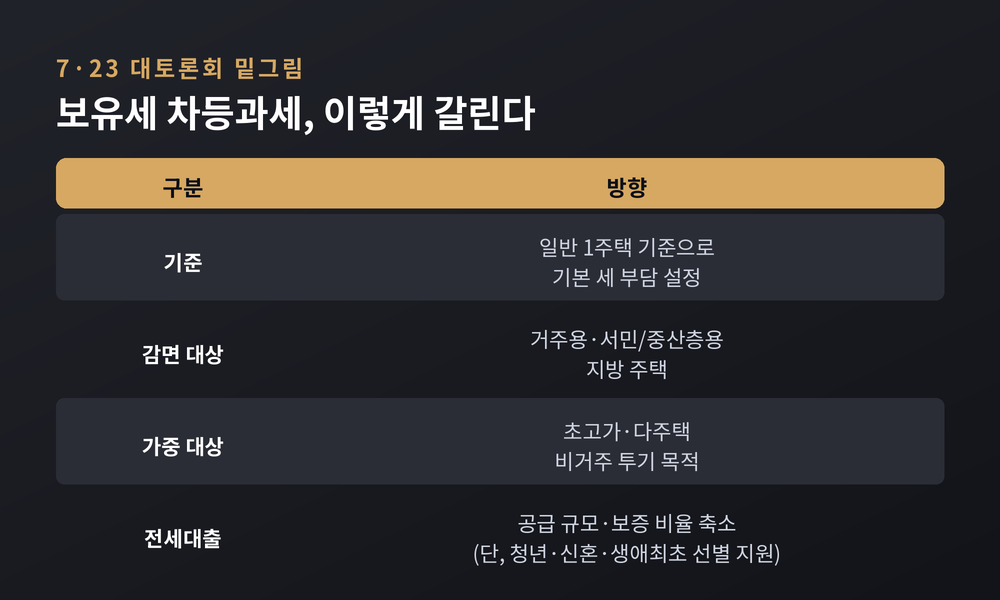
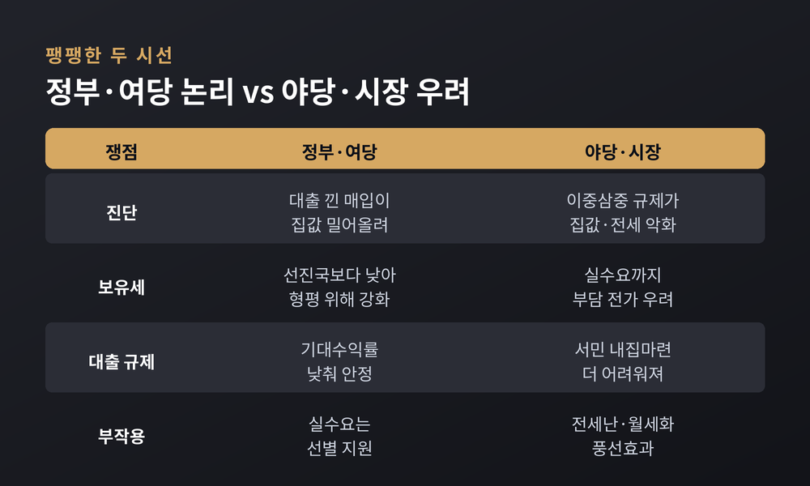
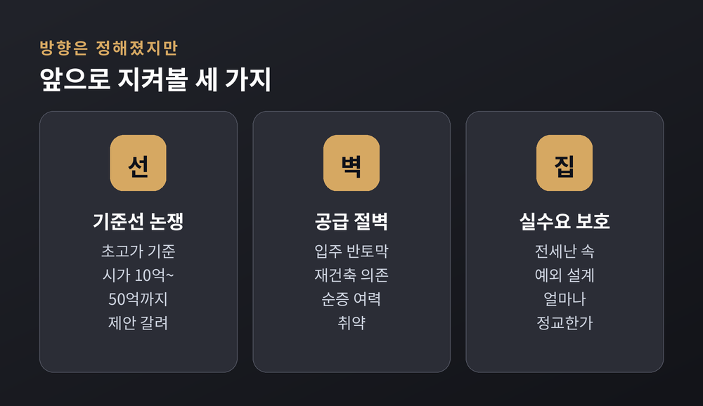

이번 글에서는 이재명 정부의 부동산 정책이 어디로, 왜 움직이고 있는지를 정리해 보겠습니다. 세금 계산을 나열하려는 것이 아닙니다. 정책의 무게중심이 '공급 확대'에서 '보유세·대출 규제'로 옮겨 간 배경과 그 논리, 그리고 찬반 쟁점을 함께 들여다보려 합니다.
방향을 공식화한 자리는 2026년 6월 8일 취임 1주년 기자회견이었습니다.
이 대통령은 청와대 영빈관에서 "실거주가 아니라면 선진국 수준으로 보유 부담을 져야 한다"고 말했습니다. 보유세를 강화하겠다는 뜻을 분명히 한 셈입니다.
이어 "세제와 금융, 규제, 공급을 조만간 한꺼번에 정리하겠다"고 밝혔습니다. 공급 하나에만 기대던 처방에서, 세제와 금융까지 묶은 종합 처방으로 축을 옮기겠다는 예고였습니다.
전세대출을 향한 발언도 눈길을 끌었습니다. "전세대출을 많이 해 준 게 집값 상승의 주된 원인"이라는 진단이었습니다. 전세대출과 반환보증의 확대가 전세사기 피해까지 키웠다는 지적도 함께 나왔습니다. 대출 규제가 왜 전면에 나왔는지를 보여주는 대목입니다.
정리하면, 예전엔 '얼마나 더 지을 것인가'가 논의의 중심이었습니다. 지금은 '누가, 왜, 얼마나 오래 보유하느냐'로 질문이 옮겨 갔습니다. 부동산을 바라보는 정부의 문법이 달라진 셈입니다.
핵심 메시지는 한 문장으로 압축됩니다.
"부동산 기대수익률을 낮춰야 한다."

기조 전환의 배경에는 지난 1년의 성적표가 있습니다.
이재명 정부의 첫 조치는 취임 직후인 2025년 6월의 '6·27 대책'이었습니다. 규제지역 안 주택담보대출 한도를 6억 원으로 묶은, 대출 억제 중심의 처방이었습니다. 이후 규제지역을 넓히고, 그해 10월 '10·15 대책'으로 서울 전역과 경기 12개 지역을 규제·토지거래허가구역으로 묶었습니다.
그런데 집값은 잡히지 않았습니다.
정부 출범 1년 동안 서울 아파트 매매가는 10.47% 올랐습니다. 직전 1년 상승률 6.56%를 오히려 웃돈 수치입니다. 서울 아파트값은 2025년 2월 상승 전환 이후 75주 연속 오름세를 이어갔습니다.
대출을 묶고 세금을 늘렸지만 집값은 못 잡았다는 평가가 이어졌습니다. 규제가 강해질수록 시장이 비켜 간다는 이른바 '규제의 역설'입니다. 이 진단이 정책 조합을 다시 짜게 만든 동력이 됐습니다.

한 가지는 짚어 두어야 합니다. 공급을 포기한 것은 아닙니다.
정부는 2026년 1월 2일 국토교통부에 주택공급추진본부를 출범시켰습니다. 부서 간 칸막이를 없앤 전담 조직으로, 공급 정책의 컨트롤타워를 표방했습니다.
구도는 '투트랙'에 가깝습니다. 공급은 전담 본부로 속도를 높이고, 정책의 강조점은 보유세·대출 규제로 옮기는 방식입니다. 다만 강조점이 규제로 실리면서, 여론의 시선도 자연히 보유세와 대출 쪽에 쏠리게 됐습니다.
문제는 시장 조건입니다. 2026년 서울 아파트 입주 예정 물량은 1만6412가구로, 전년보다 48% 줄어든 '반토막' 수준입니다. 그마저 약 90%가 재개발·재건축 물량이어서 순증 여력은 얕습니다. 2021~2023년에 인허가와 착공이 크게 줄어든 결과가 지금 입주 감소로 나타나는 것입니다.

정책의 윤곽은 2026년 7월 23일 부동산 국민 대토론회에서 좀 더 선명해졌습니다.
이 대통령이 직접 주재했고, 학계와 시장 전문가, 시민단체, 일반 국민까지 약 140명이 참석했습니다. 유튜버와 맘카페 운영자, 공인중개사도 자리했습니다.
보유세는 '차등과세'로 가닥이 잡혔습니다. 일반적인 1주택을 기준으로 기본 부담을 정한 뒤, 가격과 거주 목적, 지역에 따라 세 부담을 달리하는 구상입니다. 거주용·서민·지방 주택은 감면하고, 초고가·다주택·비거주 투기 목적에는 가중하는 방향입니다.
대출도 손을 댑니다. 전세대출의 공급 규모와 보증 비율을 전반적으로 낮추되, 청년·신혼부부·생애최초 임차인 같은 실수요자는 선별해 지원하는 안입니다.

정책 논쟁인 만큼, 시선은 갈립니다.
정부·여당 쪽 논리는 이렇습니다. 대출을 낀 고액 매입 수요가 집값을 밀어 올린다는 진단입니다. 실거주가 아닌 자산 증식 목적 보유의 기대수익률을 낮춰야 시장이 안정된다는 것입니다. 보유세는 선진국보다 낮으니, 실거주 감면과 투기 가중으로 형평을 맞춘다는 프레임입니다. 목표는 집값 억제가 아니라 '시장 정상화'라고 정부는 강조합니다.
반대편의 우려도 만만치 않습니다.
장동혁 국민의힘 대표는 토론회를 두고 "현실과 동떨어진 방향만 재확인한 자리"라고 비판했습니다. "이중삼중 규제로 집값은 폭등했고, 전세는 사라졌으며, 대출까지 막아 집을 사지도 팔지도 못하게 만들었다"는 주장입니다.
전문가들은 '풍선효과'를 걱정합니다. 전세대출 보증 비율을 90%에서 80%로 낮추고 금리 인하가 겹치면, 전세 매물이 줄고 전셋값이 오르며 월세화가 빨라질 수 있다는 것입니다. 실제로 서울 전세 매물은 올해 초부터 27~30% 넘게 급감해, 5년 만의 전세난이라는 말이 나옵니다.
대출 규제로 수요가 15억 원 이하 주택에 쏠린다는 지적도 있습니다. 초고가·다주택 보유세만 죄어서는 부족하니, 양도세 퇴로와 전세대출 보완을 함께 담은 '정책 조합'이 필요하다는 주문입니다.
여론도 정부가 마냥 반길 신호만은 아닙니다. 토론회를 앞두고 온라인으로 모인 국민 의견은 규제 완화와 지원 확대에 쏠렸습니다. "대출이 막혀 집을 샀는데 잔금을 못 치른다"는 실수요자의 호소가 적지 않았습니다. 규제의 취지에 공감하면서도, 그 문턱에서 밀려나는 사람이 생긴다는 걱정이 함께 담긴 것입니다.

승부처는 결국 '숫자'와 '설계'입니다.
초고가 기준선을 어디에 긋느냐, 실수요 예외를 어떻게 짜느냐에 따라 체감은 크게 달라집니다. 토론회에서도 초고가 기준으로 시가 10억, 공시가격 20억~30억, 50억 이상까지 폭넓게 거론됐습니다. 합의가 쉽지 않다는 뜻이기도 합니다.
공급 절벽과 전세난이 겹친 국면이라, 규제만으로는 한계라는 지적은 여전히 유효합니다. 공급 컨트롤타워와 세제·금융 규제라는 두 축이 얼마나 정교하게 맞물리는지가 관건입니다.

정리하면 이렇습니다.
이번 전환의 본질은 세금을 몇 % 올리느냐가 아닙니다. 오른 집값 앞에서 정부가 시장을 읽는 방식 자체가 바뀌었다는 데 있습니다.
관전 포인트는 하나로 모입니다 — 75주 연속 오른 서울 아파트값이 꺾이느냐, 아니면 규제의 역설이 한 번 더 되풀이되느냐.
방향은 정해졌습니다. 남은 것은 설계의 정교함과, 실수요자가 그 사이에서 다치지 않도록 지켜낼 수 있느냐입니다.